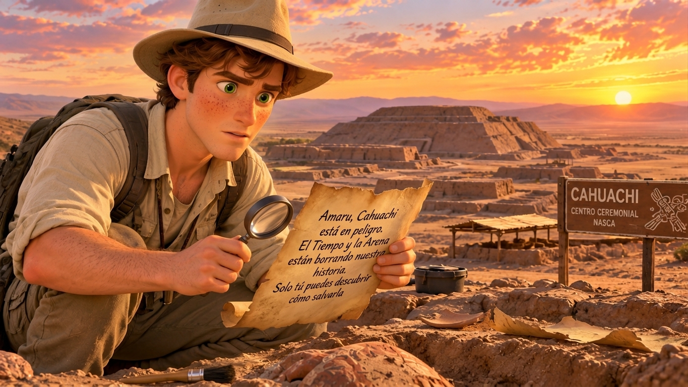
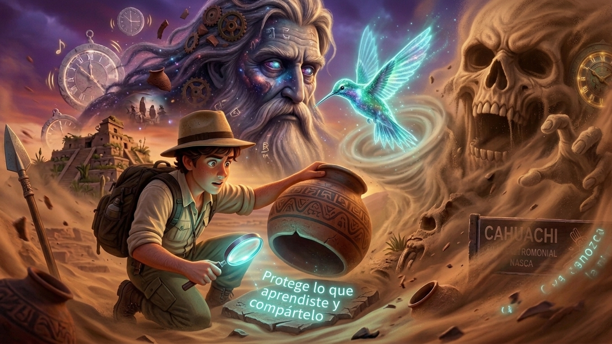
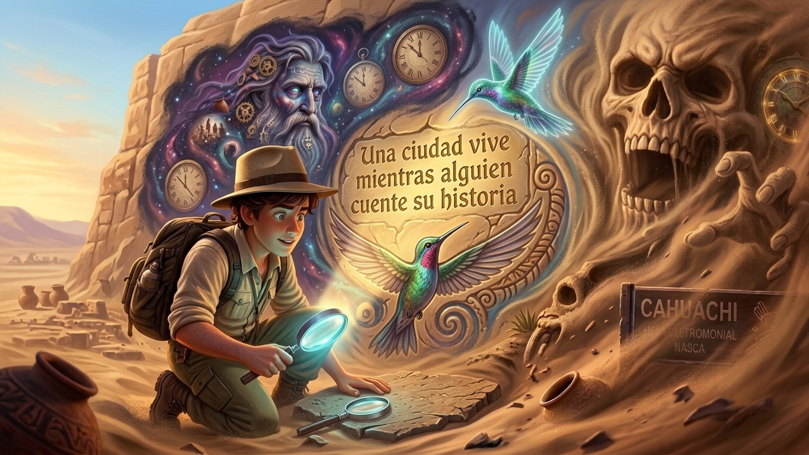
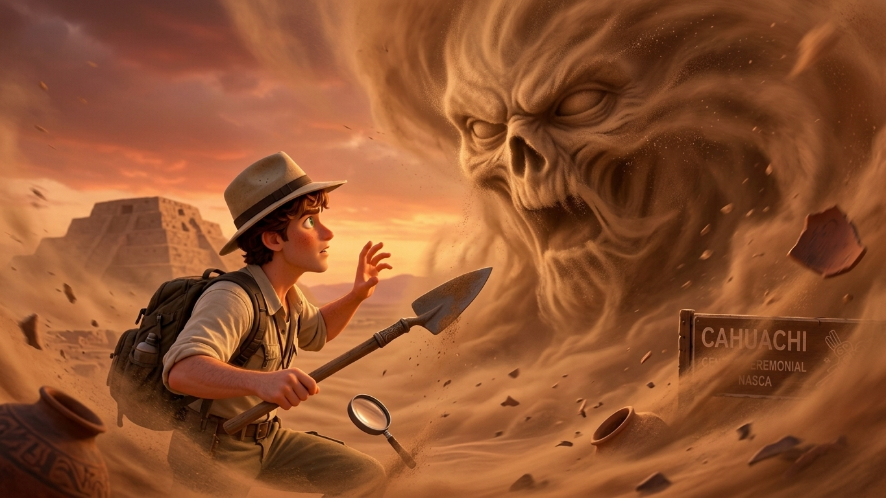

Patrimonio arqueológico del Perú
La ciudad que
conversa con el desierto.
Un viaje al corazón ceremonial de la cultura Nasca, donde el adobe, el viento y las estrellas aún guardan memoria.
Cahuachi en movimiento

historia viva



Más que ruinas
Una ciudad
hecha de tiempo.
Cahuachi no fue una ciudad común. Fue el centro ceremonial más grande de la cultura Nasca, un lugar de peregrinación donde el desierto se convertía en escenario para conectar con lo sagrado.
Entre pirámides de adobe y plazas hundidas, miles de personas se reunían para celebrar, intercambiar y dejar su huella en la historia.
Conoce su historia ↗ceremonial
identificadas
esplendor
Solo espera a ser escuchado.“
Donde la tierra
se vuelve memoria.
El entorno de Cahuachi es parte de su significado. El río, las montañas y las líneas del desierto forman un mapa vivo que todavía podemos recorrer.
Tu próxima expedición
Ven a escuchar
lo que el desierto
tiene para contar.
Prepara tu visita con respeto, curiosidad y tiempo. Cahuachi se descubre despacio.
Ver ubicación